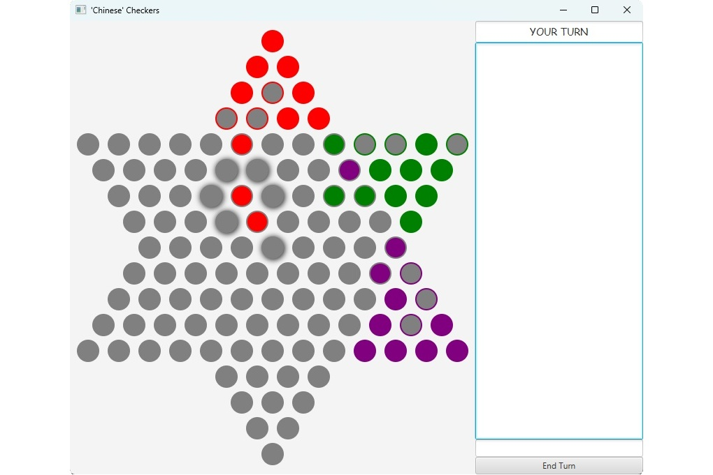

Projects
Two Player Arena Game
This project is a two player, one screen game made in Unity. There's movement, attacks and monsters trying to catch you Read more

Chinese Checkers
This project is a multiplayer game written in Java called Chinese Checkers, which supports up to six players/bots. It uses sockets for real-time communication and includes a MySQL database that allows players to save and load games seamlessly. The game provides an engaging and interactive experience while ensuring smooth connectivity and persistence. Read more
Linux System Info
This Linux system monitoring script provides real-time information about CPU usage, RAM utilization, network speed, battery status, and system load. It updates every second, displaying data dynamically in the terminal. Read more
Hack'n'Slash Gamemaker Game
A short game created in Gamemaker Game Engine. Includes 3 different basic enemies and two boss fights. Player can upgrade his skills after surviving an enemy wave. The game has a menu, good movement and fight mechanics and a simple music. Unfortunately all game files have been formatted when I changed the OS, and the only thing left is game's build.

Simple Military Shooter Game
A simple game where I tried to include enemies able to find a path to the player despitre the obstacles